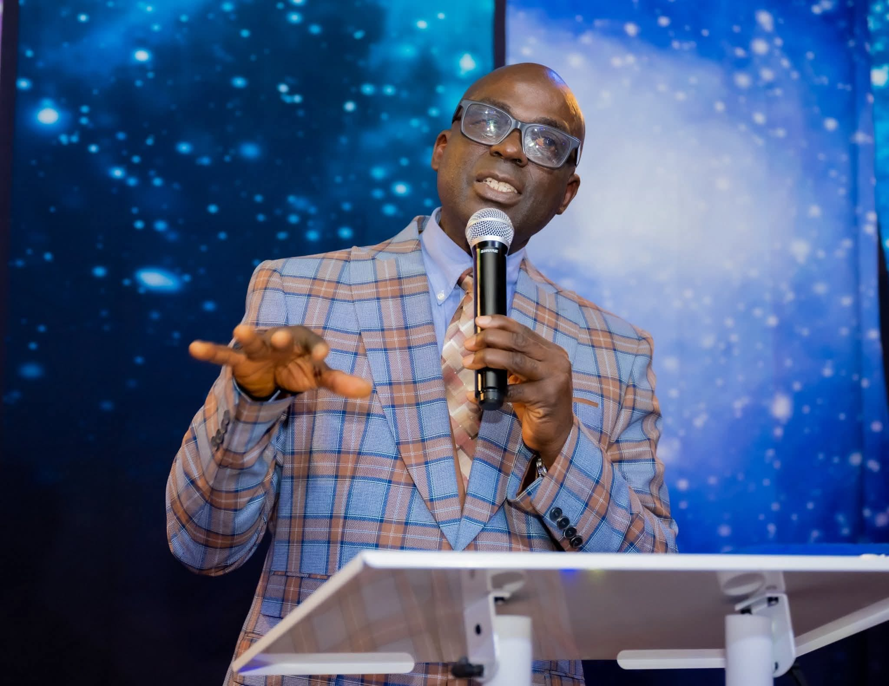

Solution Center For All Nations — an Indianapolis parish of The Redeemed Christian Church of God, serving our city since 2003.
Who We Are
Established on February 18, 2003, RCCG Solution Center For All Nations (SCONA) is a Bible-believing, Spirit-filled parish family on the west side of Indianapolis. We worship, pray, study the Word, and serve our community together — and our door is always open.
To make heaven, and to take as many people as possible with us — pursuing holiness as a lifestyle and reaching every nation for the Lord Jesus Christ.
To have a member of RCCG in every family of all nations, planting churches within minutes of every home so no one is far from the gospel.
The entire Scripture, Old and New Testament, is written by the inspiration of the Holy Spirit. We share the historic doctrines of RCCG worldwide. Read the full statement →

Meet Our Pastor
Resident Pastor
Pastor Ayodeji Rotimi Obajolu leads RCCG Solution Center For All Nations with a heart for the Word, for worship, and for the city of Indianapolis. Under his leadership, the parish has grown into a warm, multicultural family where people encounter God and find practical solutions for life's challenges.
From Sunday School and the Family Service to Good Morning Holy Spirit, Faith Clinic, Digging Deep, and the monthly Holy Ghost Night, Pastor Obajolu is passionate about seeing every member rooted in Scripture, alive in prayer, and equipped to serve.
He serves alongside a dedicated team of ministers, deacons, and workers, and he would love to welcome you personally this Sunday.
Plan a VisitOur Heritage
The Redeemed Christian Church of God was founded in 1952 in Lagos, Nigeria, by Pa Josiah Akindayomi. Under the leadership of the General Overseer, Pastor E.A. Adeboye, RCCG has grown to more than 9 million members across 50,000+ parishes in 197 countries and territories. Our parish belongs to RCCG North America, Indiana Zone 1.
Members worldwide
Parishes globally
Countries & territories
New Life
Wherever you are on your journey, Jesus is ready to meet you. The Bible shows a simple path:
Acknowledge that you are a sinner in need of a Savior. (Acts 2:36–38)
Confess your sins to God and ask for His forgiveness. (1 John 1:9)
Repent, forsake the old ways, and join a Bible-believing church. (Acts 3:19; Hebrews 10:25)